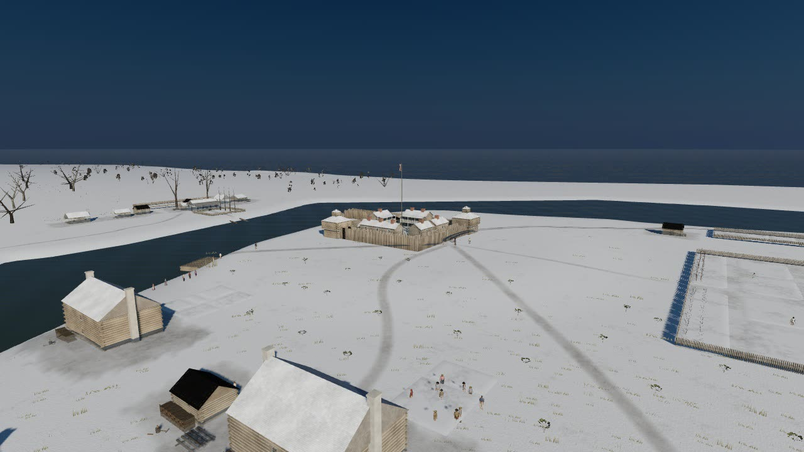
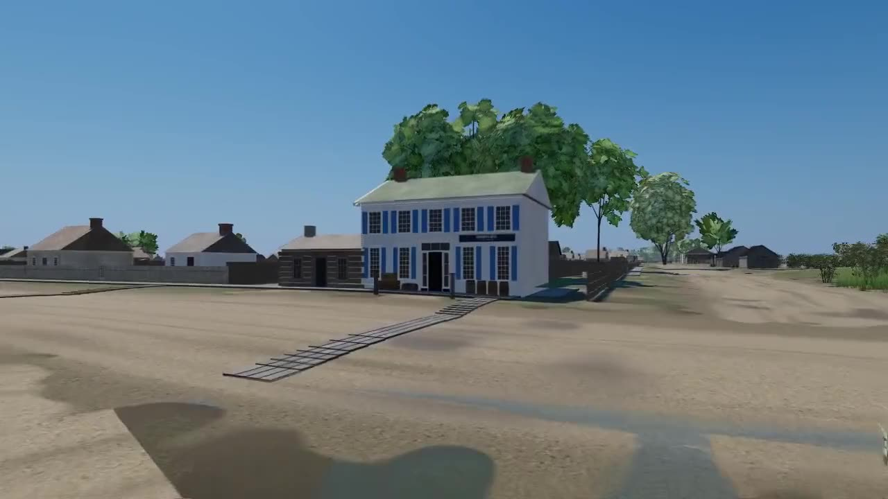
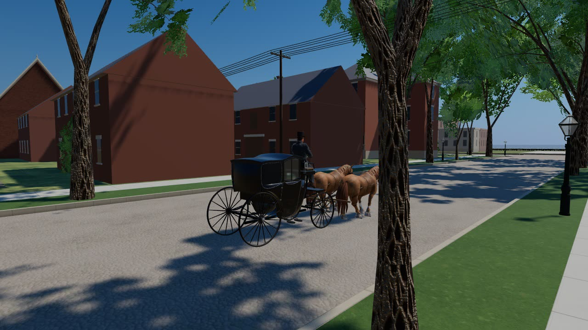

Three moments. One city.
Each year is rebuilt at a single date, from the sources that speak to it. Ninety-two years separate the first and the last, and almost nothing of the first survives into the last.
 1812 · 07:40
1812 · 07:401812 · Fort Dearborn
The first fort at the mouth of the Chicago River, on the day before its garrison marched out. Log blockhouses and pickets, the trader John Kinzie's house across the water, French and Métis households along the north bank, and the Potawatomi camps gathered on the prairie for the payment that summer.
- Scene date14 August 1812, the eve of the evacuation
- On the riverDugouts and canoes you can paddle across
- StoriesThe Battle of Fort Dearborn, staged stop by stop
- First Fort Dearborn1803
- North-west blockhouseFORT
- South-east blockhouseFORT
- Commanding officer's barracksFORT
- Officers' barracksFORT
- Soldiers' barracks · two rangesFORT
- MagazineFORT
- Flagstaff · 15 starsFORT
- Parade groundFORT
- Covered way to the riverFORT
- The fort's wharfRIVER
- US factory · trading houseOUTER
- Indian agent's houseOUTER
- Interpreter's houseOUTER
- Bake houseOUTER
- Armourer's shopOUTER
- Three stablesOUTER
- Officers' and sutler's gardensOUTER
- Kinzie house · built by du SableNORTH BANK
- Kinzie dairy · bake house · horse millNORTH BANK
- Ouilmette · La Lime · Le Mai housesNORTH BANK
- Burns houseNORTH BANK
- Lee house at the river mouthSHORE
- Lee's Place · HardscrabbleSOUTH BRANCH
- Forks houses · company cornfieldFORKS
- Potawatomi camps and lodgesAUG 1812
- Miami escort's campAUG 1812
- 12 boats at the crossingsRIVER
- 2 wagons on the roadsROADS
- 834 people on recordPEOPLE
 1812 · jaunt
1812 · jaunt 1812 · wagon
1812 · wagon
1812 · winter 1835 · above the forks
1835 · above the forks1835 · The river town
Two years after Chicago became a town, with the land boom under way. Taverns and stores along Lake and South Water streets, a drawbridge over the river, schooners at the wharves, the second Fort Dearborn at the mouth, and the whole town going in and out of its homes and places of work.
- Scene date1 July 1835
- People3,891 townspeople on record, each with a home and a day
- Lake StreetThe Tremont House, the Sauganash, stores and taverns
- Fort Dearborn · the second fort1816
- Barracks · parade · magazineFORT
- Lighthouse · 1832 towerMOUTH
- Dearborn Street drawbridgeRIVER
- North pierMOUTH
- Sauganash HotelLAKE & MARKET
- Green Tree TavernLAKE ST
- Tremont House · the firstLAKE ST
- Steamboat HotelNORTH SIDE
- New York House · Mansion HouseLAKE ST
- Western HotelWEST SIDE
- Log cabins at Wolf PointFORKS
- South Water Street storesWATERFRONT
- Kinzie & Hunter warehouseWATERFRONT
- Newberry & Dole warehouseWATERFRONT
- Beaubien trading postMICHIGAN AVE
- First Presbyterian ChurchCLARK ST
- St. Mary's Catholic ChurchLAKE ST
- Log jail · Council HousePUBLIC
- Indian Agency HouseNORTH SIDE
- Chicago American · Chicago DemocratPRESS
- Elston soap and candle worksINDUSTRY
- Miller tannery · Clybourn slaughterhouseINDUSTRY
- North Branch bridge · brickyardsNORTH BRANCH
- Emigrant and land-sale campsSHORE
- Wagons and teamsROADS
- 3,891 townspeople on recordPEOPLE
The final removal of the Potawatomi from Chicago came in August 1835, weeks after this scene date. The project researches it carefully, flags every record that touches it, and does not stage events the scene date has not reached.
 1835 · Lake St
1835 · Lake St
1835 · Lake & Market 1835 · dusk1904 · Prairie & 18th
1835 · dusk1904 · Prairie & 18th1904 · Prairie Avenue
Chicago's Millionaire's Row as it stood in 1904. The Glessner, Pullman, Field and Kimball houses and their neighbours, house by house, with coachmen on their broughams, staff at the service doors, and the families who lived there in their own clothes.
- Scene date1 July 1904
- InsideDoors open, stoops to climb, a Glessner tour told by its household
- Library62 buildings, 138 sources, 38 maps in the Prairie Avenue library
- Glessner House1800 PRAIRIE
- Pullman house1729 PRAIRIE
- Marshall Field house1905 PRAIRIE
- Kimball house1801 PRAIRIE
- Coleman-Ames house1811 PRAIRIE
- Elbridge Keith house1900 PRAIRIE
- Edson Keith house1906 PRAIRIE
- Armour-Corwith house1945 PRAIRIE
- Armour house2115 PRAIRIE
- Glessner-Lee townhouse1700 PRAIRIE
- George Glessner townhouse1706 PRAIRIE
- Hibbard house1701 PRAIRIE
- Henderson house1816 PRAIRIE
- Doane house1827 PRAIRIE
- Dexter house and its frame house1721 PRAIRIE
- The belvedere house1936 PRAIRIE
- Goodman house1612 PRAIRIE
- First Presbyterian ChurchINDIANA & 21ST
- Fort Dearborn massacre monument18TH ST · 1893
- Illinois Central 16th St stationRAIL
- Coach houses and alley stablesALLEYS
- Three broughams on their loopsSTREETS
- Elms · gas lamps · parkwaysSTREETS
- Indiana and Calumet blocksWEST
- 445 residents on recordPEOPLE

1904 · brougham 1904 · winter
1904 · winter 1904 · dusk
1904 · duskPick a coordinate. Jump.
Runs in your browser on a computer, a phone or a VR headset. Sign in once and every year is open.